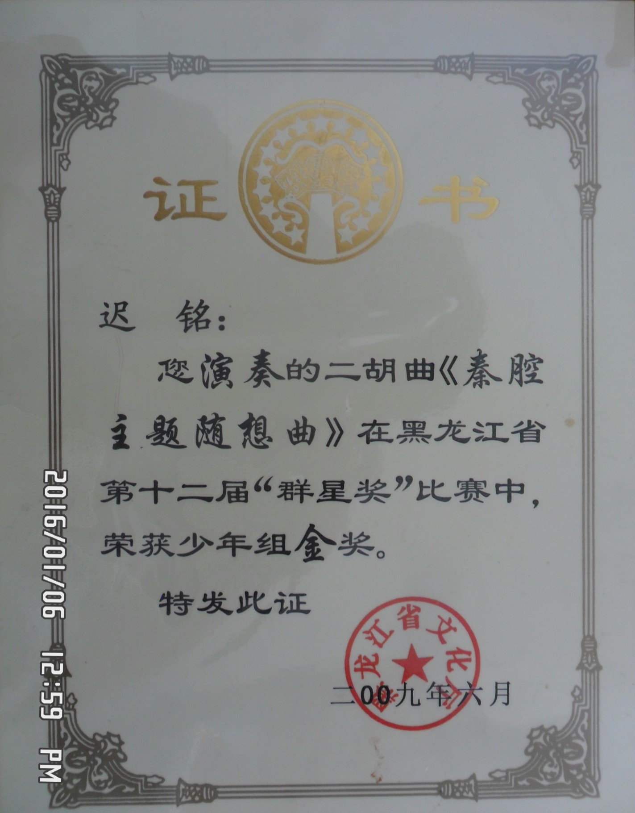

Ming's Profile
"Explore, discover, and learn."
二胡学习经历

九岁起开始学习二胡。 曾在三位黑龙江省高级二胡教授门下学习。 有较强的二胡方面天赋，进步迅速，入门早。 依序学习了很多二胡独奏乐曲。 于2006年凭借山东风格传统曲目《一枝花》考取二胡十级证书。
随后他开始对特殊风格乐曲进行更多的学习。 于2009年凭借 东北乐曲《江河水》以及 陕北风格乐曲《秦腔主题随想曲》获得黑龙江省金奖。
在大学期间，他开始对西洋风格乐曲如《查尔达什》、《流浪者之歌》等进行练习， 以追求技术的提升。西洋乐曲转调多、把位杂、升降音多，进一步提升了他的水平。



任职于中国地质大学（武汉）民族管弦乐团
大学期间于中国地质大学（武汉）民族管弦乐团工作两年。 曾随团参加多次演出及比赛。 在乐团的两场十周年庆典演出中，参演了《庆典序曲》，《天路》，《台湾追想曲》，《龙腾虎跃》， 《十面埋伏》，《情歌王》，《我的祖国》，《赛马》等合奏乐曲，成就了乐团十年来质量最高的演出
在乐团中，由于他对不同调式的掌握以及对二胡训练系统的了解，他对于整个弦乐声部有很大的贡献。 在弦乐声部中可以演奏二胡、中胡、高胡。除了为演出练习准备以外，他还要辅助二胡教师指导毫无乐器基础的新生。在2012年底以及2013年年初，岁月团参加全国大学生艺术节的比赛，获得湖北省一等奖和全国二等奖